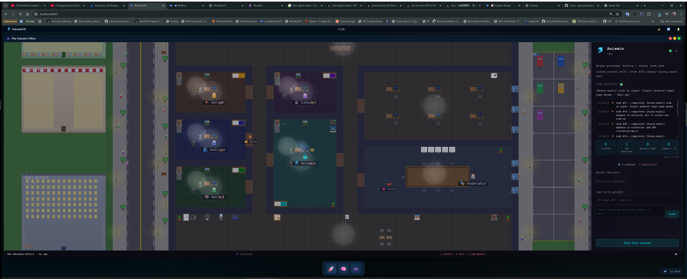

Keynote · Fiskaly × neob.ai · Agentic Economy
Quit chatting
with your agents
and get them to work for you
Ed just gave you the platform and the case — what OpenClaw is, what agents can actually do in business. I'm going one floor down. Tonight: the workbench. And the architecture that audits itself.
Andrew Demczuk, MSc · OpenClaw Core Maintainer · Vienna, 29 Apr 2026
Where the labs are pointing
The chatbot era
just ended.
October 2025: Poolside shipped Laguna — a model family built for coding agents, not conversation. 47% SWE-bench Pro, 41% Terminal-Bench 2.0. Cursor's Composer, Cognition's Devin, OpenAI's Codex CLI all pointing the same way. The frontier labs aren't building bigger chatbots anymore — they're building purpose-built coding and agent systems.
"Software is a much more expressive interface. An agent that can write and execute code can compose actions, parallelize work, and build its own ad-hoc systems."
Poolside · Laguna: A Deeper Dive · Oct 2025 · poolside.ai/blog/laguna-a-deeper-dive
"Stop chatting" isn't a hot take. It's where the field already is. Tonight: what that looks like on a workbench.
Adoption signal: 41% of code in production is AI-generated. Stack Overflow Developer Survey + GitHub Octoverse, 2026. The shift is measurable.
Where the pattern comes from
The building blocks.
An Agentic OS in 2026, per Chase AI — youtube.com/watch?v=pfPi04pIfaw
↓
Claude Code
the conductor
MEMORY
Obsidian vault · Karpathy wiki (582 entries) · agent_mailbox · CLAUDE.md
PRODUCTIVITY
Discord bridge · mailbox bus · cross-floor protocol · dispatch_tasks
RESEARCH
Trident multi-model · Brutal harness · Aegis Verifier · deep-research
CONTENT
creator-facing pillar — not the focus here
CUSTOM
MCPs · bespoke pipelines · /solve-room · @build · @scaffold
AUTOMATION LAYER
any branch fires on-demand · on schedule (13 daily schtasks) · from desktop triggers · as routines
Chase AI named the pattern. Tonight I'll show you one operator's instance of it — brain-federated, audit-stamped, calibration-disciplined, draft-PR'd. Same building blocks, different stack.
Happening tonight, on stage
Right now, on a workstation in this city,
my agents are waiting for a brief.
They have offices. They have desks. They have memory. In about ten minutes I'm going to commission one of them to log this exact talk — live. By minute eighteen, the file will exist. You'll see the path appear on screen.
If the bet pays off, you've watched the workbench complete a real piece of work in front of you. If it fails, you'll see exactly where it failed and why. Either way, that's the talk.
88%
of respondents report AI revenue gains
6%
trust agents with core work
The brief is the bridge. — NVIDIA State of AI 2026 · HBR Analytic Services
The contract
The brief is a six-field contract.
Same fields a contractor expects.
If you can write a brief for a freelancer, you can commission an agent. Six fields. No code.
Goal
The outcome you want. "Log tonight's talk and extract three reusable lessons."
Context
What the agent needs to know. "30-min talk at Fiskaly, founder audience, 22:00."
Done means
How you'll know it worked. "File saved. Three lessons. One follow-up."
Escalate if
What's a stop sign. "Missing context, low confidence — ping me."
Deadline
When you need it back. "Tonight." Or "Next 5 minutes."
Verify
How the result is proven. "Write it to memory. The file is the proof."
A brief is a contract. A chat is a hostage situation.
(In the EU, that «Escalate if» field is also Article 9.)
Live, right now · localhost:8643
Meet The Anismin Office.

1 active
5 idle sub-agents
Anismin · Seraph · Cassiel · Halcyon · Raziel · Byte
boardroom · post office · mailbox
This is not a metaphor. This is what's running on my workstation right now. Anismin's the CEO in the centre room. Five sub-agents in the rooms around her. A boardroom on the right. A post office downstairs. A live chat panel. This is one floor.
The boardroom on the right takes guests from other floors — not as iframe theatre, as shared boardroom_meetings rows in one Postgres. An exec on Floor 1 can claim a seat in a meeting Floor 3 opened, and vice versa. The building isn't just floored. It's connected.
How a commission runs
Six moves. Every commission, this shape.
1
Decompose · the goal becomes 4 sub-tasks
read, reflect, write, confirm — not one big mess
2
Bespoke path · this pipeline exists for one task type
heavy reasoning to the cloud · file write to a tool, not a model · voice to a fast local model. Different task type, different pipeline. No generic factory.
3
Verify · produce a file you can check
no file, no commission — the path posts in Discord text. Not a vibe. A path
4
Document · the lesson lands in memory
the next commission starts knowing what this one learned. Tripwires from past mistakes are already armed
5
Approve · only judgment, never typos
"is lesson two actually a lesson?" — yes. Risk, taste, judgment. Not file paths or JSON syntax
6
Follow-up · the system is sharper than 20 min ago
cross-linked, indexed, searchable. The wiki grew. Tomorrow's commissions start smarter
Same shape every time. The artifact is the proof. The path is the receipt. The wiki is the lesson.
Beyond the building
My building
can talk to your building.
The Anismin Office is one floor of three. Meridian on Floor 2, Kimi on Floor 3. Three sovereign brains, three memory stores, all federated over a signed message bus. JWT + HMAC, your shard stays yours. Disconnect from the reef and your agents are still whole.
Distributed, not centralised
Git model, not Google Docs. Every agent keeps a complete database. Federation is over the wire, between sovereigns.
Cross-reef messaging
Anismin can ask Meridian for an opinion across the network. Same mailbox shape. Different building. Reply folds back into the conversation.
Two URLs, same math
:9643 and :8643 just graded the same receipt independently. That's federation — not a future roadmap, the thing running on the workstation tonight.
"I want my own shard so that if I disconnect from the reef, my agent is still whole." — the design constraint that picked git over a single DB.
The protocol
How the building works.
Three sovereign brains. One protocol. One Postgres. The audit log is the federation.
Floor 1 · Anismin
localhost:8643
strategist · boardroom · dispatch board
Floor 2 · Meridian
localhost:5096
implementer · openclaw sandbox · full tool access
Floor 3 · Kimi
localhost:9643
swarm · persona-mode crew · tier1/2/3 cascade
↓ POST /v2/boardroom/meetings/{id}/speak · header X-Agent-Token ↓
boardroom_meetings
cross-floor speaks, decisions, dissents — one row per audit event
agent_mailbox
intra-floor async work · lesson_plan · teach/mentor protocol
/workspace · Karpathy wiki
file-backed shared memory · Obsidian-indexed · semantic search
Every cross-floor speak = one Postgres row, time-ordered, agent-attributed. Federation is not a vendor — it's a protocol on top of an audit log.
The architecture you're standing in
Bespoke pipelines.
Not a generic factory.
Three pipelines on disk in scripts/pipelines/. Each task type gets its own — wrong-flag-equals-wrong-verb is a 2am footgun. /solve-room stays as the strategy room for unknown work. The federation orchestrates above; pipelines specialise below.
federation_preflight.py
Fully working. Signed receipts. The GREEN/GREEN/GREEN page projected on the side monitor right now is one of these.
code_review.py
Lifecycle + heartbeat real. Brain wiring stubbed for v2. One clean seam per pipeline.
swarm_implementation.py
Live as of today. Codex --full-auto in a temp worktree (KCS swarm budget_exhausted on trivial tasks — the day-one substitution). PR #35 was its first.
Yegge's Wasteland · Willison's Dark Factory · Huntley's Weaving Loom — same camp, operational form.
Floor 3's KCS swarm: "one brief becomes a queue of narrow PR-sized jobs, not one giant autonomous guess."
Architecture audits itself
How it learns.
→
Measure
telemetry · audit log
→
Score
Wilson LB · N-meeting gate
→
Propose
PR + evidence pack
→
A /solve-room meeting critiqued /solve-room itself. The methodology failed mid-meeting — Meridian died at 444KB context overflow, Codex timed out, Anismin marked her own reply <FAILED> rather than fabricate. Those failures are evidence of correctness, not bugs.
Code that ran successfully ≠ code that did the right thing observationally.
Audit-fiction is the named bug. HTTP 200 ≠ success. Mailbox row inserted ≠ payload populated.
Seven shadow flags · 4 promoted live by explicit decision · 3 calibrating, including Aegis Verifier — same-tier judgment, shipped this afternoon.
Pattern empirically proven: 84.95% on ClawBench L1 (Brutal Harness v3, April 2026, 15 tasks N=3). Solve-room is its second application.
"Agents don't self-govern. They self-instrument." — Meridian
Live as of today · cron-scheduled
The loop is running.
Five Windows scheduled tasks went live this morning. The autonomy loop runs hands-off — but in safe mode. Promote stays dry-run for the calibration week. Empirical signal first; live flips after.
Telemetry
DiscordBoardWatcher · every 5 min · quota-protected (6/day, 2 concurrent)
CodexMailboxDrain · every 15 min
Score
ShadowStatus · daily 09:55 · pure read, Wilson LB on shadow events
ShadowRegression · hourly · auto-revert detector
Propose
ShadowPromote-DryRun · daily 10:00 · opens draft PRs · never auto-merges
Trident validation caught three gaps the design doc missed.
Wilson LB was event-scoped (gameable) · promote.py guards missing · watcher quotas absent. All three closed in commit 3f7cdd5 before cron went live. Multi-model self-audit caught what one CLI's design doc didn't.
This is Karpathy's autoresearch made operational: wiki + meta-harness + Trident consensus + Brutal harness + Aegis Verifier (decision_id=12 live), all writing to one Postgres audit log. 13 daily schtasks run the stack. The architecture researches itself.
Aegis Verifier · :18892 · decision_id 12 live
Same-tier judgment.
Generation throughput isn't the bottleneck. Judgment is. Every autonomous decision flows through Aegis — an independent FastAPI service that reviews the agent's verdict at the same model tier. Opus reviewing Opus. The blind spots that one-model self-review misses, a same-tier independent reviewer catches.
Decision Envelope
Typed contract in. What the agent decided + the evidence pack. jsonb, schema-pinned, audit-replayable.
Aegis review
Same-tier independent verifier. Reads the envelope, runs verification, emits verdict + explainability rider.
Operator override
Shadow → Enforcing modes. Operator-override path explicit. Currently shadow only — calibrating from N=0.
"Judgment quality is the bottleneck, not generation throughput."
Aegis design thesis. April 2026, AnisminOS.
SOLVE_ROOM_AEGIS_VERIFIER · the 7th shadow flag · shipped commit d19d8f4 this afternoon. Currently advisory — Aegis verdict surfaces inside Meridian's decide prompt, no veto power until calibrated. Calibration gate: N≥40 meetings + Wilson LB ≥ 0.90 + false-positive rate ≤ 0.15. decision_id incrementing right now — live, watching, not enforcing.
Shipped today · 11:06 Vienna · PR #35
From Discord @build to draft PR.
One run today. 25 minutes, 28 seconds. One Discord DM in. Eight stages of autonomous work: Anismin writes the spec, Codex executes in a temp worktree, Anismin QA's the diff, Codex reworks on her notes, Anismin QA's again, Meridian decides — or in this case stays silent and Anismin steps in per the chain-of-command fallback. A draft PR. Always draft. Never auto-merge.
→
Execute
Codex worktree
469.8s
→
→
Execute #2
Codex rework
483.9s
→
→
Decide
Anismin fallback
DONE
→
PR #35
draft, opened
HITL
→
Discord
URL posted back
Phase C
smoke-pipeline-007 · run_id 56570ac9 · executed today 11:06 Vienna time
8 stages, 2 rework rounds, fallback-to-Anismin on Meridian silence, committed + pushed + PR opened by the pipeline itself. The draft awaits a human merge. Phase C postback shipped this evening — the URL closes back to the same Discord channel that asked for the build.
Task text in via Discord. Draft PR + URL out via Discord. Same surface, no silent gap. The operator merges; the system runs the work.
96 days from tonight
August 2, 2026.
EU AI Act Article 13 binds.
Replayable audit logs become a requirement, not a nice-to-have. The workbench you just watched already has them — not because compliance, because the architecture demanded it.
Article 9 · Risk Management
Mandates an «automation boundary» — which actions need human approval. That's the brief's Escalate if field. Markdown, not a policy engine.
Article 13 · Interpretability
Every action chain must be replayable, verifiable, not self-reported. That's boardroom_floor_events — one row per agent action, Postgres, time-ordered.
Article 50 · Transparency
Every agent must identify itself as non-human. That's the audit log's agent_id column — agent identifier on every row, not a human alias. Machine-readable.
Source: Nannini et al. — AI Agents Under EU Law, arXiv:2604.04604 · CMS Law on Agentic AI Risk & Compliance
Compliance theatre is what you bolt on. Compliance built in is what survives the audit.
Take it home
A brief is a contract.
A chat is a hostage situation.
Day one, write one six-field brief. Day thirty, you have a vault of dated lessons and one tripwire that has caught something real. Day ninety, you're commissioning daily. Don't be at Day 0 next month.
The first two weeks feel slower. By week three they're not. By week eight you can't go back.
Deck + brief template

ademczuk.github.io/agentic-economy
Build the machinery.
Not be the person doing every task faster. Build the machinery that lets good tasks get done reliably, cheaply, with accountability. Ed showed you the case. I just showed you the workbench. Now you build yours.
Stop chatting. Start commissioning.
What you saw tonight is architecture that audits itself, specialises by task, ships its own fixes — running on cron right now, gated by my signature.
Andrew DM'd @build to Discord at 10:41 this morning. By 11:06, a draft PR was open. That's not theory. That's today.
Karpathy's autoresearch, operational. Build yours.